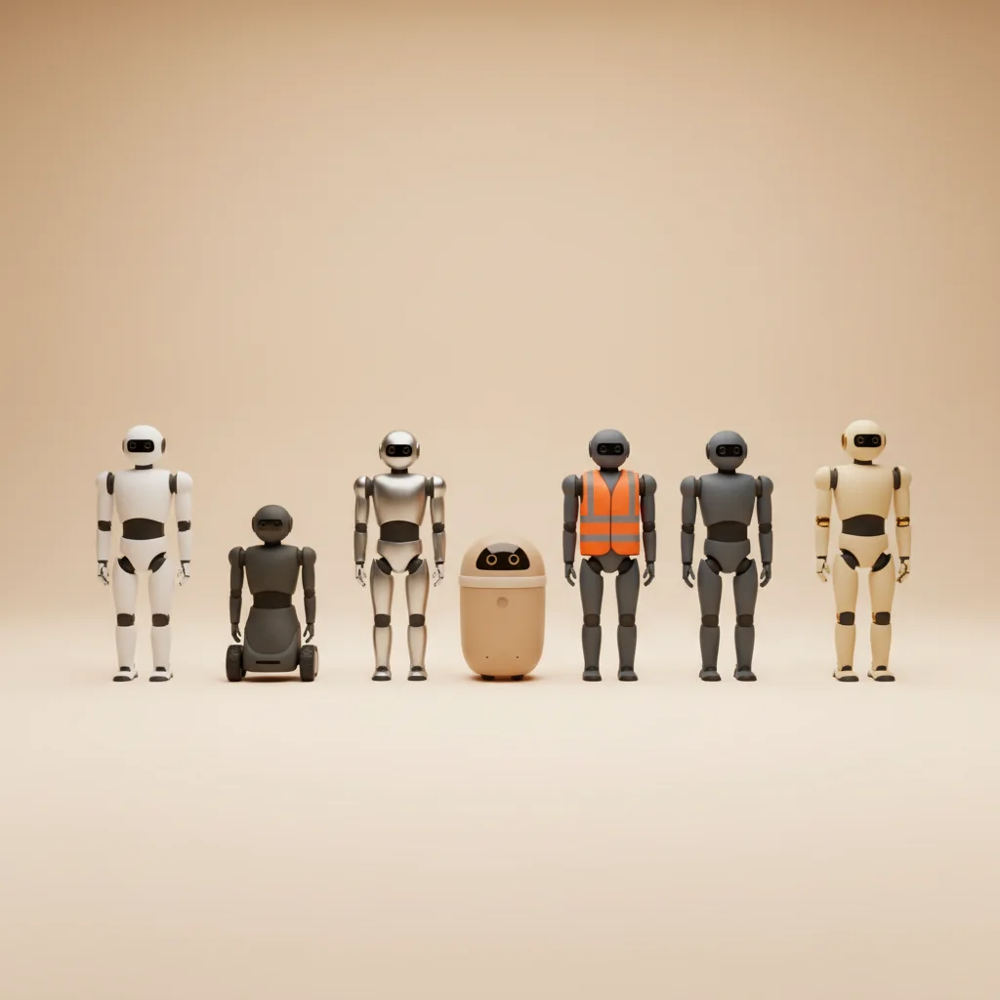
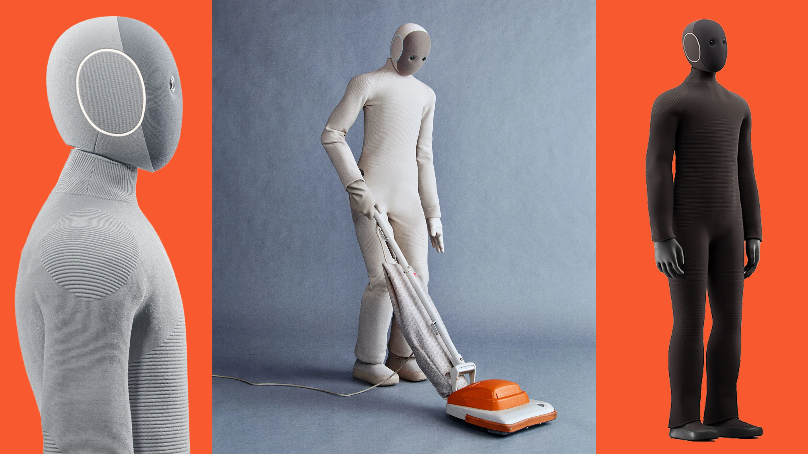
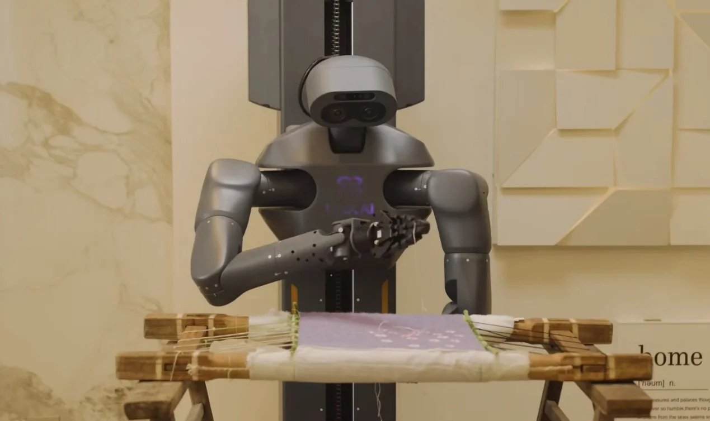
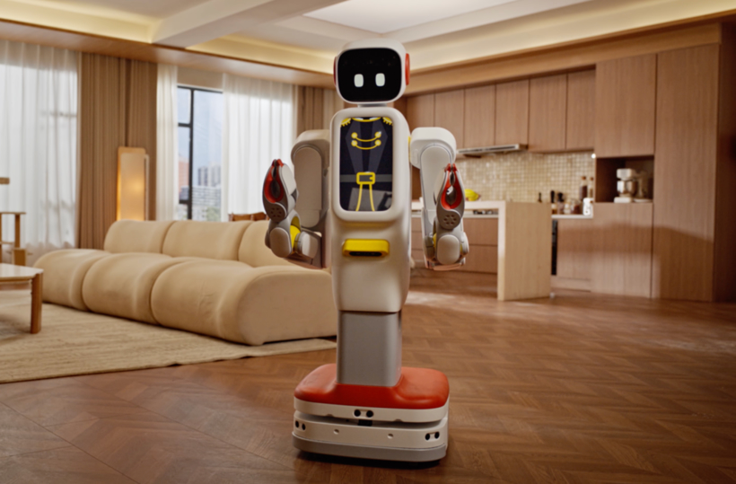
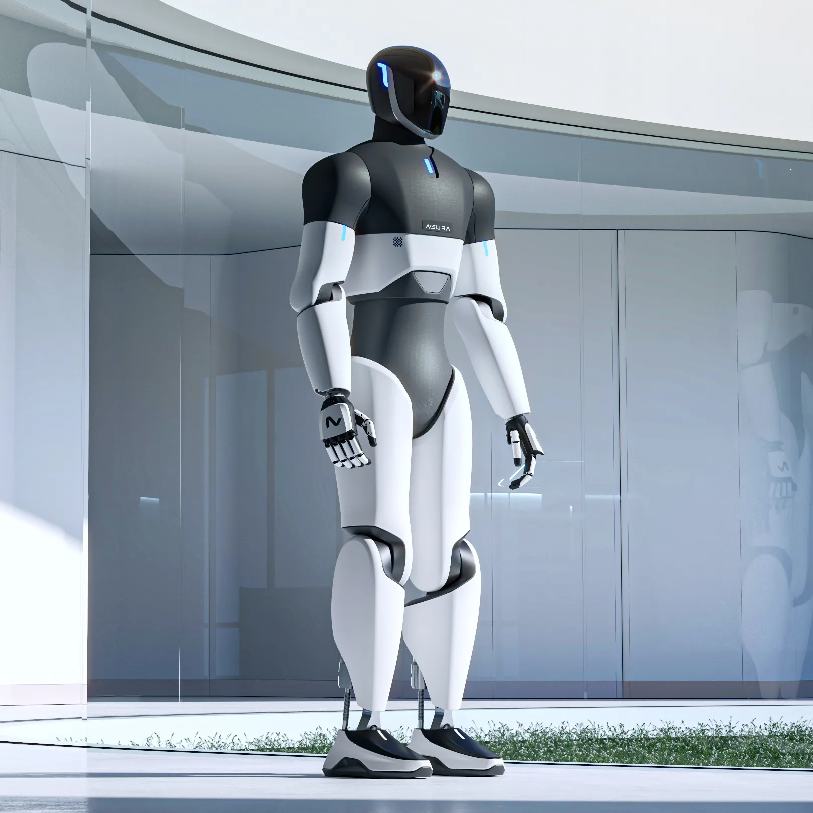
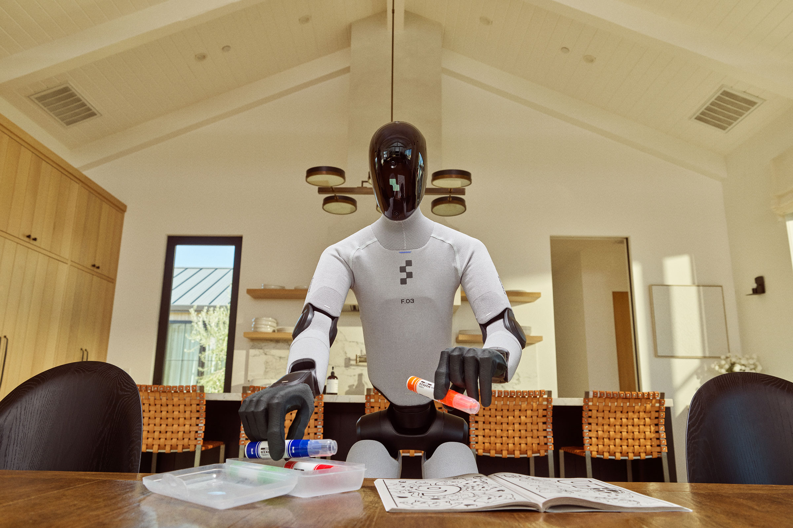
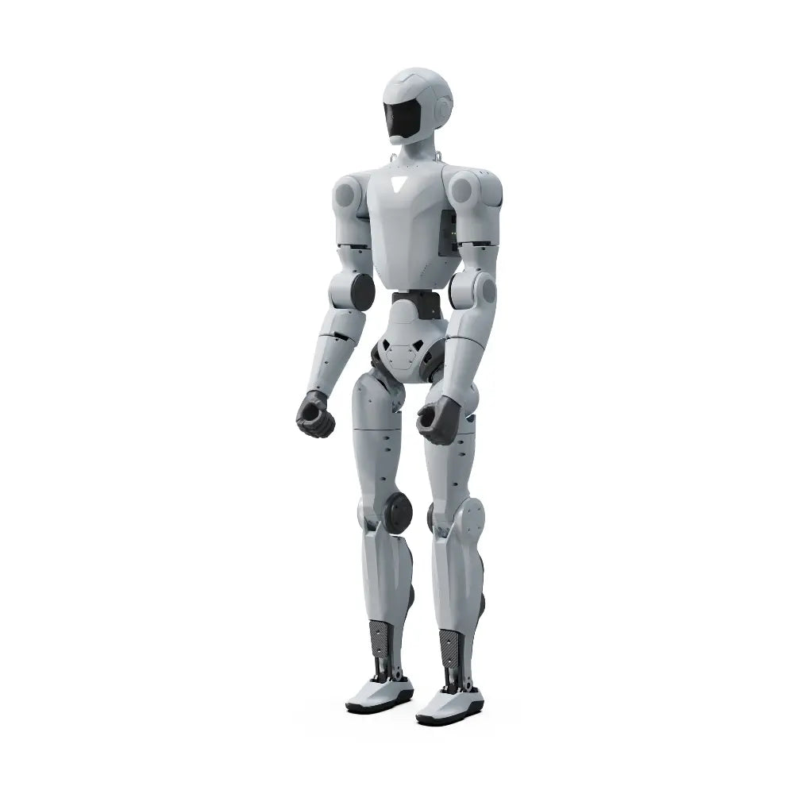
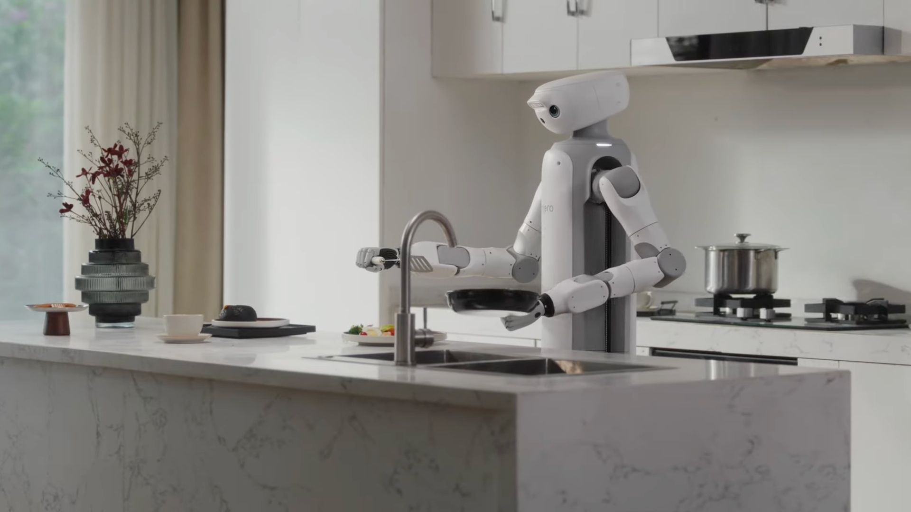

Siete robots diferentes quieren entrar en tu casa este año. Hemos repasado precios, disponibilidad real y letra pequeña de los siete, y los hemos ordenado en tres columnas: compra real, pre-order y demo de feria.
💡 Recomendación IA: v1 (Stat + reframe). Motivo: abre con el conteo 3 reales / 2 pre-orders / 2 demos — que es la columna vertebral del artículo entero — y entrega payoff concreto antes de pedir al lector que siga. v2 (precio) y v3 (clasificación) retrasan la concreción a favor del tono.
[HOOK v1 · Stat + reframe]
Siete humanoides domésticos diferentes quieren entrar en tu casa en 2026. Hemos mirado la letra pequeña de los siete. Tres son productos reales. Dos son pre-orders. Dos son demos con música épica detrás. Si solo vais a leer tres párrafos, el titular está al final del artículo, en Nuestro veredicto.
[HOOK v2 · Numerical shock]
Entre 4.500 € y 98.000 €. Un factor 20 entre el humanoide doméstico más barato que se vende hoy y el más caro. Y todos te prometen lo mismo: que te doblarán la ropa. Hemos ordenado los siete que son reales (o casi), os decimos cuáles están realmente a la venta, cuáles aceptan pre-orders y cuáles son todavía una demo con música épica detrás.
[HOOK v3 · Classification reframe]
El humanoide doméstico ya se compra. O se pre-compra. O se reserva. Depende del país, del marketing y de cuánto te creas un vídeo promocional. Os lo clasificamos en tres columnas: compra real, pre-order y demo. De los siete que hemos filtrado, solo tres caen en la primera.
Hay docenas de humanoides anunciados para 2026 — Tesla Optimus Gen 3, Boston Dynamics Atlas, Agility Digit, Xpeng Iron, Xiaomi CyberOne, LG CLOiD, Sanctuary Phoenix y varios más. La mayoría no son candidatos domésticos: son industriales, o ni siquiera tienen pre-order activa. Para este repaso solo hemos incluido humanoides que cumplen tres condiciones simultáneas:
Con esos tres filtros quedan siete: 1X NEO, UniX AI Panther, China F2, Neura 4NE-1, Figure 03, Unitree R1 y SwitchBot Onero H1. Los revisamos por orden de realismo — del más entregable al más aspiracional.

Imagen: 1X NEO en versiones cream, beige y grey. Fuente: 1X Technologies.
País: Noruega (EE.UU. operativo) · Precio: $20.000 o $499/mes · Depósito: $200 · Envíos 2026: solo EE.UU. y Canadá · Estado: pre-order.
El humanoide de 1X Technologies, startup noruega respaldada por OpenAI. 30 kg, levanta 70 kg, carga 25 kg, sistema de tendones biomimético. Demos de doblar ropa, regar plantas y traer tazas. Homepage: "el primer humanoide para tu hogar".
Hardware decente y ya ha empezado a entregarse en EE.UU. desde octubre de 2025. Ecosistema SDK abierto para desarrolladores. Diseño pulido y coherente — menos "robot industrial disfrazado" que la mayoría.
Requiere teleoperación humana remota para buena parte de las tareas "autónomas" (ya os lo contamos aquí). Y la semana pasada 1X firmó con EQT un deal industrial de 10.000 unidades que desplaza el foco real de la empresa hacia fábricas. Pagáis $200 para un envío que no tiene ni fecha clara ni mercado europeo.
Para nadie que viva en Europa, a menos que os encante pagar por ser beta tester de una estrategia corporativa todavía en construcción. Para early adopters norteamericanos con tolerancia al fallo y paciencia operativa, vale.

Imagen: UniX AI Panther preparando desayuno. Fuente: UniX AI / The AI Insider.
País: China (Shenzhen) · Precio: no publicado internacional · Envíos: desde 10-abr-2026 · Estado: entregas activas en China.
UniX AI arrancó entregas del Panther el 10 de abril de 2026 y la propia empresa lo describe como "el primer humanoide de servicio en despliegue doméstico real". Arquitectura con ruedas y doble brazo, 80 kg, 1,60 m, 12 horas de autonomía. Demos oficiales: hace la cama, prepara desayuno, organiza objetos.
Producto real, ya entregándose. La decisión de usar ruedas en vez de piernas bípedas es pragmática — menos glamour técnico pero más utilidad en un piso real. Autonomía de 12 horas es mejor que la mayoría de bípedos que hoy la dan de 3-4 horas.
Sin precio internacional publicado, sin distribuidor europeo, sin fecha para España. Los analistas que lo han probado avisan: de demo a hogar real hay un abismo. Lo que veis en YouTube es Panther en cocina de showroom con luces de estudio — no en el piso de 70 m² de un vecino de Madrid.
Si vivís en Shenzhen o Pekín y tenéis acceso al canal de UniX, es el humanoide doméstico con más papeletas de funcionar hoy. Para el resto, es el candidato a seguir — ahora mismo no se compra desde Europa.
⚠️ IMAGEN OPCIONAL — asset ya descargado y pie listo. Borra este bloque entero si NO la quieres, o borra solo este <div class="image-optional"> wrapper si SÍ la quieres (dejando img + caption).

Imagen: Futuring F2 durante el piloto en hogares chinos. 36.000 yuanes (~4.500 €) por el derecho a participar en el programa, no por un producto cerrado. Fuente: Futuring Robot.
País: China · Precio: 36.000 yuanes (~4.500 €) · Envíos: piloto activo en 300 hogares Pekín/Shanghái · Estado: piloto comercial real.
Humanoide chino lanzado en abril 2026 con un programa piloto en 300 hogares de Pekín y Shanghái. Diseño más ligero que Panther, enfoque "compañero funcional": recordatorios, apoyo a mayores, tareas repetitivas. Menos musculatura pesada, más integración conversacional.
El precio. 4.500€ está cuatro veces por debajo del NEO y es el primer humanoide doméstico que cae en la franja de "coche de segunda mano usado" y no de "coche nuevo europeo". Hay 300 familias piloto probándolo en escenarios reales, no en showroom.
Capacidad funcional más limitada que NEO o Panther. El posicionamiento "compañero" es amable pero también es una pista: no esperéis que haga la colada. Sin plan internacional anunciado.
Si buscas un humanoide de entrada con IA conversacional y asistencia a mayores, y vivís en China continental, merece la pena seguirlo. Para Europa, es la señal de hacia dónde va el mercado: precios aterrizando.

Imagen: Neura 4NE-1 Gen 3.5 con acabado Porsche Design. Fuente: Neura Robotics.
País: Alemania · Precio: 98.000 € flagship · 19.999 € Mini · 60.000 € a escala de flota · Envíos: pre-orders abiertas · Estado: pre-order.
La respuesta europea: Neura Robotics (Alemania) con el 4NE-1 Gen 3.5 diseñado por Porsche Design. 180 cm, 80 kg, 55 grados de libertad, visión 360°, piel artificial con sensibilidad al tacto. Corre sobre GR00T de NVIDIA más un sistema propio llamado NEURON OS. Objetivo declarado: 5 millones de unidades antes de 2030.
Es literalmente el único humanoide doméstico europeo con pre-order abierta hoy. Eso importa: certificación CE, cumplimiento AI Act y servicio técnico dentro del mismo bloque regulatorio. La versión Mini a 19.999€ tiene un precio que ya suena a "producto de consumo muy premium" y no a exposición del CES.
El flagship a 98.000€ es un status symbol, no un electrodoméstico. Como un Porsche: si preguntas el precio, no es para ti. Y el objetivo 5M de unidades para 2030 suena a diapositiva de ronda de inversión, no a realidad industrial. Queda demostrar que la piel artificial y las 55 DoF se traducen en algo útil en una cocina.
Si estáis en Europa, tenéis presupuesto de coche nuevo premium (20k€ Mini) o coche deportivo (98k€ flagship) y queréis un humanoide con regulación europea encajada — es la opción. Para el resto, es la referencia a seguir: nuestro humanoide continental.
⚠️ IMAGEN OPCIONAL — asset ya descargado y pie listo. Borra este bloque entero si NO la quieres, o borra solo este <div class="image-optional"> wrapper si SÍ la quieres (dejando img + caption).

Imagen: Figure 03 en la portada de Time. El envoltorio doméstico llega con el mismo hardware que ya ensambla BMW X3 en la planta de Spartanburg en turnos de 10 horas. Fuente: Time Magazine / Figure AI.
País: EE.UU. · Precio: ~$20.000 (objetivo) · Envíos: finales de 2026 según Figure AI · Estado: pre-anuncio.
Figure AI anuncia el Figure 03 como "diseñado para el hogar": textiles lavables, carga inalámbrica, volumen más compacto. Viene directo del pedigrí industrial del Figure 02, que ya ha producido más de 30.000 unidades de BMW X3 en la planta de Spartanburg trabajando turnos de 10 horas.
Hardware y cadena de suministro probadas en el Figure 02. Respaldo financiero sólido (Microsoft, OpenAI, NVIDIA entre los inversores). El hecho de que vengan del lado industrial significa que la fiabilidad por hora de trabajo es un dato real, no una promesa.
Este es el patrón que ya vimos con 1X NEO: el humanoide se optimiza para el cliente que paga cada mes, y ese cliente es industrial. El Figure 03 doméstico huele a subproducto del hardware amortizado en BMW. Sin pre-orders abiertas a día de hoy, sin precio confirmado, sin roadmap europeo.
Todavía no para nadie. Seguirlo de cerca en 2026 — si abre pre-orders con fecha real, sube de categoría. Mientras tanto, es aspiración con buena foto de portada.

Imagen: Unitree R1, el humanoide más barato del mercado. Fuente: Unitree / Robotshop.
País: China · Precio: desde $4.900 · Envíos: disponible · Estado: venta activa.
Unitree R1 es el humanoide más barato del mercado actualmente a la venta. Plataforma pequeña, pensada como kit de desarrollo e investigación. Su hermano mayor, el Unitree G1, arranca en $13.500.
Precio. Si queréis un humanoide para trastear, hacer demos de universidad o aprender robótica, no hay nada más accesible. Unitree fabrica cuadrúpedos desde hace años y tiene una cadena de suministro real, no un PowerPoint.
Esto NO es un mayordomo. Es un kit. No dobla ropa, no prepara café, no asiste a mayores — es una plataforma sobre la que alguien tiene que programar comportamientos. Si lo compras esperando un "Rosie de Los Supersónicos" barato, te va a dejar amargado.
Makers, desarrolladores, universidades, integradores. No es un producto doméstico terminado, pero es la forma más barata de tener un humanoide en casa hoy. Lo incluimos porque cumple el filtro "se puede comprar ya" — conviene decir qué es y qué no es.
⚠️ IMAGEN OPCIONAL — asset ya descargado y pie listo. Borra este bloque entero si NO la quieres, o borra solo este <div class="image-optional"> wrapper si SÍ la quieres (dejando img + caption).

Imagen: SwitchBot Onero H1 presentado en CES 2026. Arquitectura con ruedas (no bípedo), objetivo de precio por debajo de 10.000 dólares y distribución europea ya existente vía Amazon ES. Fuente: SwitchBot / CES 2026.
País: Japón/China · Precio objetivo: <$10.000 · Envíos: sin fecha confirmada · Estado: anunciado en CES 2026.
SwitchBot, la marca japonesa conocida por pulsadores IoT y cortinas automáticas, presentó en CES 2026 su humanoide Onero H1. Arquitectura con ruedas (no bípedo), enfoque doméstico, objetivo de precio por debajo de 10.000 dólares.
La decisión de no hacerlo bípedo es honesta y coherente: un robot con ruedas en un piso normal es más útil que uno que mete medio segundo más en cada paso para no caerse. Precio objetivo accesible frente al resto. SwitchBot ya tiene distribución en Europa vía Amazon ES, lo cual es una ventaja logística real.
Sin fecha de envío confirmada. Cuando SwitchBot dice CES 2026 normalmente significa que el producto se ve en salones de feria y luego tarda uno o dos años en llegar con fecha real. La capacidad funcional demostrada en el stand era limitada — mover objetos ligeros, coordinarse con su ecosistema de sensores.
Vale la pena seguirlo si buscáis un humanoide doméstico asequible con distribución europea probable. Para comprar hoy, no está.
| Modelo | Precio | Estado 2026 | Europa |
|---|---|---|---|
| 1X NEO | $20.000 | Pre-order ↗ | No |
| UniX Panther | Sin publicar | Entregas activas ↗ | No |
| China F2 | ~4.500€ | Piloto 300 hogares ↗ | No |
| Neura 4NE-1 | 19.999€ / 98.000€ | Pre-order ↗ | Sí |
| Figure 03 | ~$20.000 | Pre-anuncio ↗ | No |
| Unitree R1 | $4.900+ | A la venta ↗ | Parcial |
| Onero H1 | <$10.000 | CES 2026 ↗ | Probable |
Origen por modelo: 1X NEO (Noruega/EE.UU.) · UniX Panther (China) · China F2 (China) · Neura 4NE-1 (Alemania) · Figure 03 (EE.UU.) · Unitree R1 (China) · Onero H1 (Japón/China).
💡 Recomendación IA: v1 (Conteo real/pre-order/demo). Motivo: cierra el artículo con la misma clasificación 3/2/2 prometida en el hook y mantiene la promesa estructural. v2 es más contundente pero generalista; v3 estrecha el mensaje a solo lectores europeos.
[VEREDICTO v1 · Conteo real/pre-order/demo]
De siete humanoides domésticos anunciados, solo tres son productos reales que alguien está comprando hoy (UniX Panther, China F2, Unitree R1). Dos son pre-orders legítimas con precio publicado (NEO, 4NE-1). Dos son pre-anuncios vestidos de producto (Figure 03, SwitchBot Onero H1). Ninguno está disponible con fecha firme en España.
[VEREDICTO v2 · Perspectiva temporal]
Tres humanoides se compran hoy, dos aceptan tu depósito, dos te venden un vídeo. Y ninguno llega a España con fecha firme en 2026. Si buscáis un humanoide doméstico funcionando en casa este año, la respuesta corta es no — y da igual cuánto dinero tengáis encima de la mesa.
[VEREDICTO v3 · Europeo explícito]
Desde Europa, la comparativa se reduce a uno: Neura 4NE-1. Los otros seis humanoides — tres que ya se venden en Asia, dos con pre-order en EE.UU., uno con vídeo promocional — o no salen de su continente, o no salen del PowerPoint. El humanoide doméstico europeo de 2026 es un solo producto, y cuesta 19.999 €.
Si vivís en Europa y tenéis prisa por meter un humanoide en casa: el único serio es el Neura 4NE-1 Mini a 19.999€. Es caro, su capacidad funcional está por verse y un diseño Porsche no hace que friegue mejor — pero tiene certificación y servicio dentro del bloque. El resto, o no llegan, o llegan con un año de retraso y sobrecoste de importación.
Si no tenéis prisa — que es nuestra recomendación para el 90% de los lectores — la jugada sensata es esperar 18 meses. En ese plazo veremos si el Panther llega a Europa con precio, si SwitchBot cumple con el Onero H1, y si Figure abre pre-orders con fecha real. Hoy un aspirador serio hace más por vuestro hogar que cualquier humanoide en pre-order, como ya os dijimos en la review del Saros Z70. Y por una décima parte del presupuesto.
El dato que más nos ha hecho pensar esta semana: de los siete humanoides repasados, cinco vienen de Asia (China y Japón), uno de Europa, uno de EE.UU. El mapa del humanoide doméstico ya no pasa por Silicon Valley. Pasa por Shenzhen. Y Europa, por ahora, sigue siendo un único jugador — Neura — compitiendo contra un continente entero.
💡 Recomendación IA: v1 (15% a hogares). Motivo: conecta los 7 humanoides del artículo con el mercado global y explica por qué todos tienen contrato industrial detrás — cierra un loop abierto en la intro. v2 amplía pero sin dato nuevo; v3 duplica el mapa geográfico ya mencionado en el veredicto.
[¿SABÍAS QUE v1 · 15% a hogares]
Bloomberg proyecta 90.000 humanoides enviados globalmente en 2026 y 1,2 millones en 2030. De esos, menos del 15% irán a hogares. El resto — fábricas, almacenes, logística, hospitales — es el mercado que realmente factura. Esto explica por qué todos los humanoides "domésticos" de esta lista acaban teniendo también un contrato industrial detrás: ahí está el pipeline que paga la nómina.
[¿SABÍAS QUE v2 · Margen industrial vs doméstico]
Un humanoide industrial factura entre 80.000 y 120.000 $ al año cuando trabaja 24/7 en una línea de producción. Uno doméstico se compra una vez a 20.000 $ y ahí acaba el ingreso. Adivinad cuál de los dos mercados construyen primero los fabricantes — y por qué vuestro humanoide "doméstico" viene en realidad del laboratorio industrial rebautizado.
[¿SABÍAS QUE v3 · Mapa geográfico]
De los siete humanoides domésticos de esta lista, cinco nacen en Asia (China y Japón), uno en Europa (Alemania) y uno en EE.UU. Boston Dynamics — la marca que inventó el humanoide moderno — no aparece aquí porque Atlas es industrial puro. El humanoide doméstico de 2026 se está construyendo en Shenzhen, Osaka y Múnich. No en Boston ni en Silicon Valley.